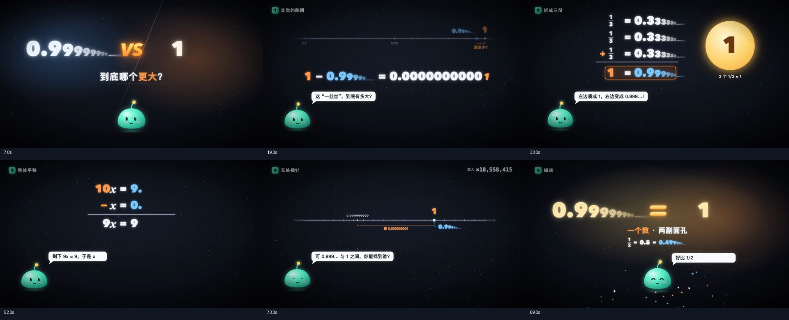
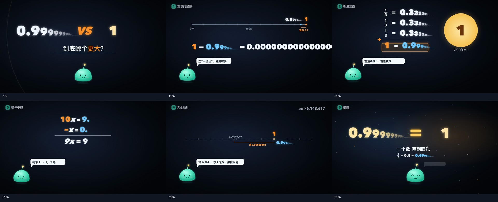

以下结论来自两份实际源码和六个场景的同时间抽帧。代码片段只保留用于说明差异的部分；自动评分明细以对比页关联的检查报告为准。
独立 Harbor 评分为55.92/100，438项全部可测。下面列出对应对象的实际检查分数；分数衡量已定义的源码行为。
| 对象 | 元素存在 | 动效绑定 | 运动参数 |
|---|---|---|---|
| 放大数轴 zoom.numberline | 100.00 | 25.00 | 0.00 |
| 有限小数圆点 zoom.finite-dot | 75.26 | 66.67 | 0.00 |
| 开场角色 intro.mascot | 96.07 | 85.19 | 20.26 |
| 开场对白 intro.dialogue | 100.00 | 77.78 | 0.00 |
| 结尾彩纸 answer.confetti | 64.76 | 62.17 | 0.00 |


原作使用同一个 k 同时控制放大倍数、数字位数、刻度间隔和有限小数的位置。复刻把这些量分开计算：刻度间隔固定，有限小数的位置按余弦往返移动。
画面能看出“放大”的意思，但刻度、距离与数值不再按原作一起变化。
const k = 9 * ramp(f, 262, 440, smoothstep); const fr = k - Math.floor(k); const gapPx = 70 * Math.pow(10, 1 - fr) / 1.5; const leftX = ONE_X - Math.min(560, 70 + gapPx * 2.4); const spacing = 60 * Math.pow(10, fr);
const zoomP = smooth(t, 8.6, 6.5); const factor = Math.pow(10, zoomP * 9); const finiteX = 1250 - (200 + 400 * (.5 + .5 * Math.cos((t-9)*Math.PI*1.6))); const tickX = 230 + i * 14.6;
原作用 talkingAt(f, lines) 判断当前是否在打字说话，驱动嘴部张合；各场景还指定 gaze、tilt、jump 等动作。复刻角色主要持续上下浮动和轻微旋转，嘴形只根据几个 mood 切换。
角色轮廓较接近，但说话时的嘴部、目光和跳跃缺少原作的对应动作。
const mouth = talking ? 3 + Math.abs(Math.sin(f * .55)) * 9 : 0;
// talking = talkingAt(f, lines)
<ellipse ry={mouth / 2 + 1} ... />const bob = Math.sin(t * 2.8) * 7; const tilt = Math.sin(t * 1.7) * 1.4; // mouth: fixed path for normal / happy, fixed ellipse for surprise
原作每位数字在出现时同时向下移动并从 0.6 放大到 1，末尾光线的长度也随展开进度增长。复刻主要渐显数字，再给各位数字叠加持续的正弦上下移动，尾线长度固定。
最后静止画面较接近，出现过程和尾端光线仍有明显差异。
translateY((1-v) * -sz * .4) scale(.6 + .4*v) width: size * .75 * sv opacity: sv * (.75 + .25 * Math.sin(f/5))
translateY(Math.sin(t*2.4 + i*.55) * Math.min(4, sz*.02)) width: size * .65
原作以每帧 0.6 字（30fps 时约每秒 18 字）显示对白，并为强调字分别设置颜色与字重。复刻改成每秒 15 字，统一颜色，并用固定宽高气泡承载长句。
同一时刻显示的文字数量不同；抽帧中可见部分长句换到气泡下方，差值公式也超出了右边界。
const n = Math.floor(f * .6); color: c.hi ? "#e8641e" : undefined fontWeight: c.hi ? 800 : 600 whiteSpace: "nowrap"
const n = Math.floor(Math.max(0,t-start-.18)*15); const height = compact ? 70 : 104; width: 1360; whiteSpace: "pre-wrap";
原作从本章第246帧（8.2秒）起，每2.4帧增加一个0；复刻从本章7.2秒附近开始，按平方增长增加0，字号也从84改成90。
在全片19秒，即本章9秒，原作显示10个0，复刻显示15个0。因此复刻的末尾数字更早跑到画面右侧之外。这是数量随时间变化的规则不同，不能只看最后有没有这条公式。
const zeros = Math.max(0, Math.floor((f - 246) / 2.4)); '0.' + '0'.repeat(Math.min(zeros, 60)) size = 84
const zeros = Math.min(64, Math.max(1, Math.floor(1 + Math.pow(Math.max(0,t-7.2)*2.1,2)))); fontSize = 90
该对象实际得分：元素存在100.00，元素属性69.42，相对关系0.00，动效绑定33.00，运动参数76.01，进出时序21.74。存在得分高，只说明公式对象被找到。
原作 Burst 使用固定随机种子和逐粒子的速度、重力、寿命；开场明确为 46 个粒子。复刻开场默认 24 个，采用均匀角度和六档半径，还加入统一旋转。
爆发位置大致相似，但密度、散开形状和消失过程不同。
<Burst at={98} n={46} speed={11} gravity={0} life={46} seed="one" />count = 24 angle = i/count*Math.PI*2 + .12 dist = (45 + (i%6)*19)*p*2.7 rotation = p*100
评分范围为 73 个前景对象。背景星尘、光晕和阴影的像素效果、精确字体排版和听觉质量属于另列的观测范围。